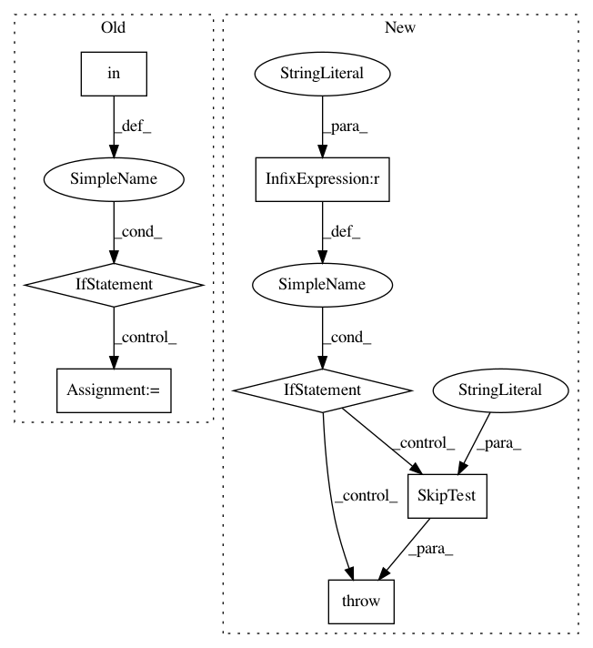

82de5503f44510ad0b060d723ea80236796a53cd,brian2/tests/test_functions.py,,test_manual_user_defined_function,#,226
Before Change
assert mon[0].func == [6] * volt
// Test C++ implementation
if WeaveCodeObject in codeobj_classes:
code = {"support_code": """
inline double foo(const double x, const double y)
{
return x + y + 3;
}
"""}
foo.implementations.add_implementations(codes={"cpp": code})
G = NeuronGroup(1, """
func = foo(x, y) : volt
x : volt
y : volt""",
codeobj_class=WeaveCodeObject)
G.x = 1*volt
G.y = 2*volt
mon = StateMonitor(G, "func", record=True)
net = Network(G, mon)
net.run(default_dt)
assert mon[0].func == [6] * volt
def test_user_defined_function_discarding_units():
// A function with units that should discard units also inside the function
@make_function(discard_units=True)
@check_units(v=volt, result=volt)
After Change
def test_manual_user_defined_function():
if brian_prefs.codegen.target != "numpy":
raise SkipTest("numpy-only test")
default_dt = defaultclock.dt
// User defined function without any decorators
def foo(x, y):
In pattern: SUPERPATTERN
Frequency: 3
Non-data size: 7
Instances
Project Name: brian-team/brian2
Commit Name: 82de5503f44510ad0b060d723ea80236796a53cd
Time: 2014-09-26
Author: marcel.stimberg@ens.fr
File Name: brian2/tests/test_functions.py
Class Name:
Method Name: test_manual_user_defined_function
Project Name: rtavenar/tslearn
Commit Name: 82d1581d79e0057b5455cd9225aa5d5785fc9419
Time: 2020-05-12
Author: romain.tavenard@univ-rennes2.fr
File Name: tslearn/tests/sklearn_patches.py
Class Name:
Method Name: check_classifiers_train
Project Name: rtavenar/tslearn
Commit Name: 82d1581d79e0057b5455cd9225aa5d5785fc9419
Time: 2020-05-12
Author: romain.tavenard@univ-rennes2.fr
File Name: tslearn/tests/sklearn_patches.py
Class Name:
Method Name: check_classifiers_classes